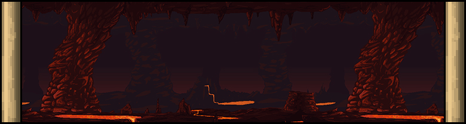
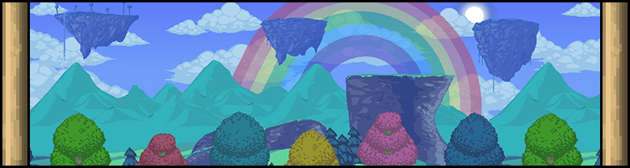
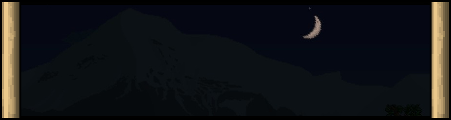
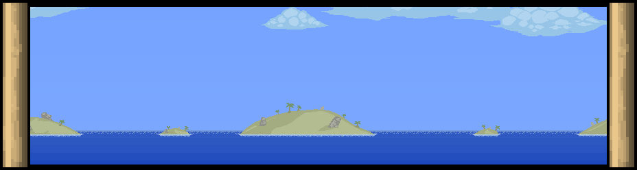
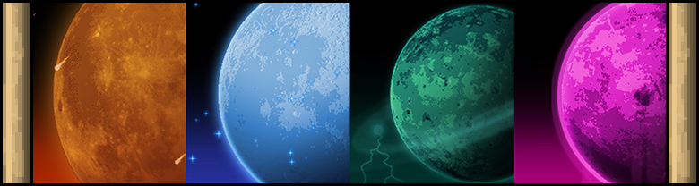

Introduction
This page will walk you through the main content of Terraria.
This list is obviously not exhaustive, because Terraria contains many random elements.
This document is primarily intended for experienced players.
If you are a new to Terraria, I would rather advise you to follow your own adventure without
this document which would spoil you much of the discoveries you could make.
Your progress is saved in your browser, you can close this page at any time and come back to it later.
Good luck Terrarian!
Legend
- 👨 NPC how to unlock the character
- 📅 EVENT how to trigger the event
- 💀 BOSS how to summon the boss
I: Journey's Beginning

-
Gather resources to build a house
-
Create a table, a chair and a door for the
👨 GUIDE
-
Gather ores to improve your equipment
-
-
Explore caverns and find some
Crystal Hearts and
consume a maximum of 4 of them
-
-
-
-
-
-
-
-
👨 ANGLER: talk to the
sleeping NPC in the ocean biome
-
-
Build a house for every NPC
-
-
-
Increase your total mana up to 200
-
-
-
-
-
Increase your health points to 200 by using a fifth
Crystal Heart
-
💀 EYE OF CTHULHU:
unlock the boss by having at least 200 HP and 3 town NPC
-
-
III: The Dungeon

-
Craft a
Phaseblade (15 meteorite bars and 10 gems)
-
-
-
-
-
Find a giant hive in the jungle biome
-
💀 QUEEN BEE: destory the
hive
larva to summon the boss, then defeat her
-
-
-
💀 SKELETRON: talk to the
Old Man at the dungeon entrance
at night to
summon the boss, then defeat him
-
-
Explore the dungeon completely
-
Open a maximum of golden chests
-
-
👩 MECHANIC: find the NPC in
the dungeon and talk to her
-
IV: The Hell

The world will now enter Hardmode introducing new and powerful monsters and ores.
V: The Hardmode

-
-
Destroy the
Altars in corrupted biomes with the
Pwnhammer to spawn new ores
-
-
👨 WIZARD: find and talk to the
NPC in the cavern layer
-
-
-
-
-
VI: Mechanical Terrors

VII: The Green Inferno

Defeating
💀 PLANTERA slows the
corruption spread by 50%
VIII: The Ritual

At night, summon all mecanical bosses and defeat them simultaneously to get a rare achievement.
IX: The King of the oceans

-
-
-
💀 BETSY: defeat the boss after
wave 7
-
👨 TRUFFLE: make an artificial
Mushroom biome with at least 200
Mushroom biome
blocks (using
Mushroom Grass Seeds) and
build a house to attract the NPC
-
-
Prepare a large area with multiple levels of
platforms in the ocean biome
-
💀 DUKE FISHRON: summon
the boss by fishing in the ocean with a
Truffle Worm as
bait, then defeat him
-
X: Journey's End

-
-
-
💀 LUNATIC CULTIST:
summon the boss by killing the 4 cultists at
the dungeon
entrance, then defeat him
-
-
-
Gear up for the last time by taking a lot of defensive potions and ranged weapons (with
Chlorophyte Bullets for example) and by
upgrading your
accessories
-
💀 MOON LORD: destroy the
forth Celestial Pillar to summon the boss, then defeat him
-
-
-
THE END (almost)
Seasonals events
📅 FROST LEGION: only
during Christmas (15-31 december), triggered with a Snow Globe that can be found in
the monsters loot presents. Once the Frost Legion is defeated, then 👨 SANTA
CLAUS
comes to the town.